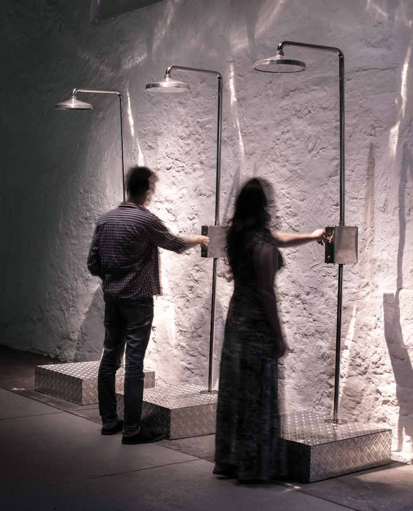
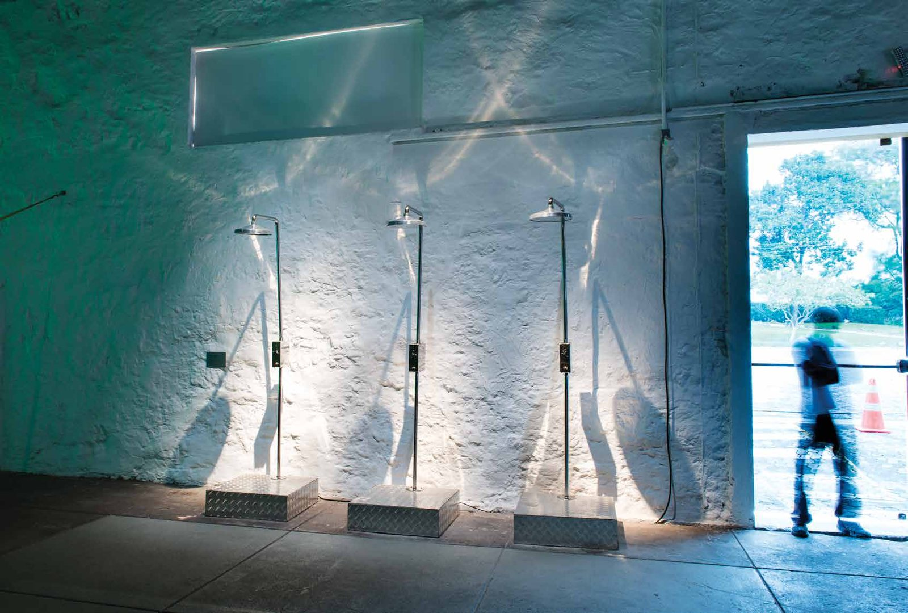
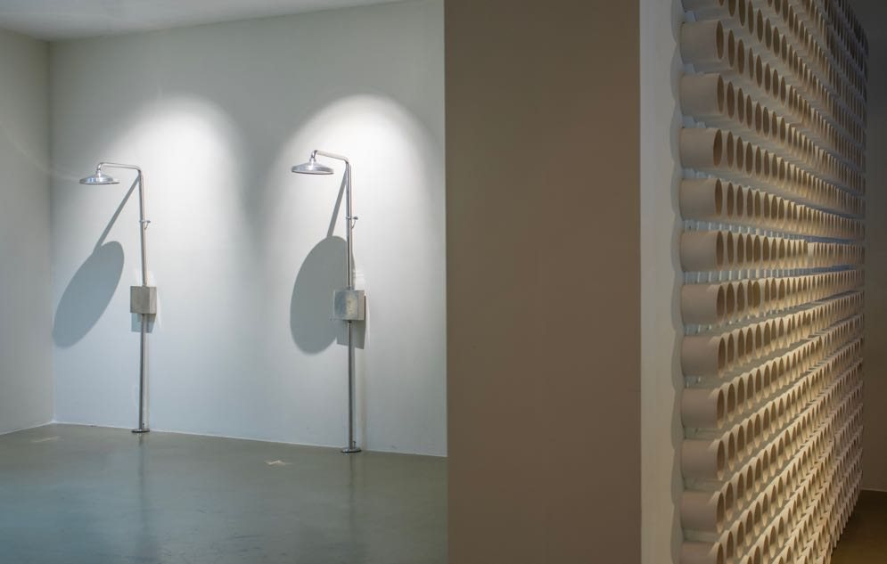
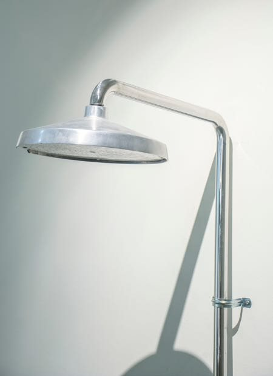

Chuveiros Sonoros
Marcantonio Vilaça Award, Funarte, 2012
Use headphones
Sound object with stainless-steel showers, amplifier and loudspeaker playing home recordings of anonymous singers. Marcantonio Vilaça Award, Funarte, 2012; collection of the Museu de Arte Contemporânea de Niterói.
- Award
- Marcantonio Vilaça Award, Funarte, 2012
- Materials
- Stainless steel showers, amplifier, loudspeaker and home recordings
- Dimensions
- 249 × 70 × 70 cm
- Venue
- 7th Mercosul Biennial, Mostra Absurdo, Porto Alegre (2009); Casa de Cultura Laura Alvim (2013)
- Exhibition
- Sonar (2013), A Pele do Mundo (2023)
- Curated by
- Glória Ferreira, Michael Asbury
- Collection
- Museu de Arte Contemporânea de Niterói (acquired through the award); Sérgio Carvalho Collection
- Photos
- Vicente de Mello, Pedro Tressi



